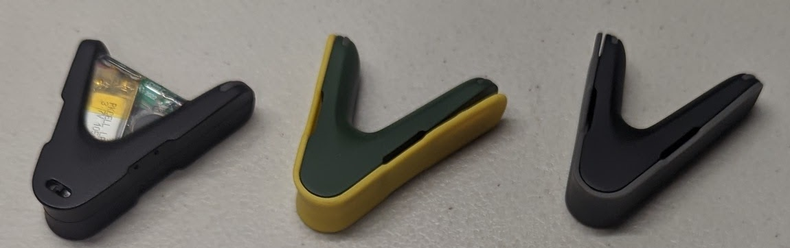
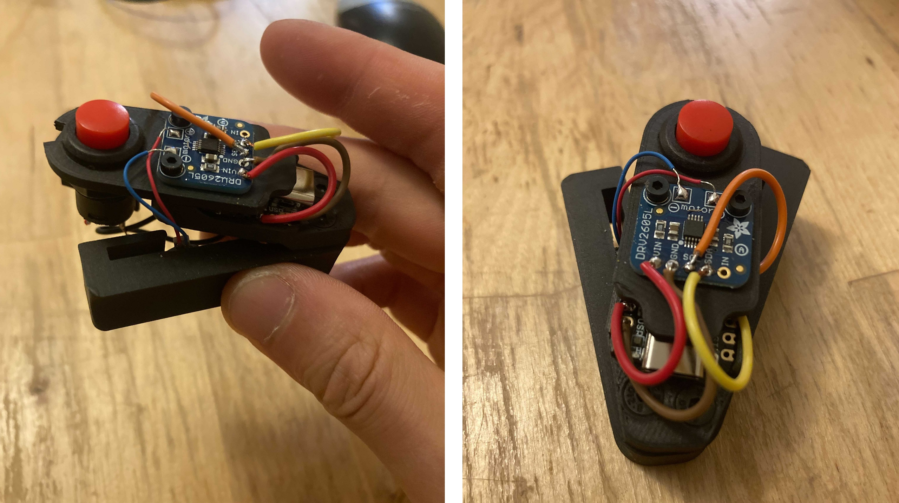
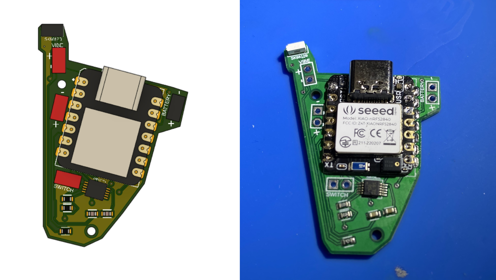
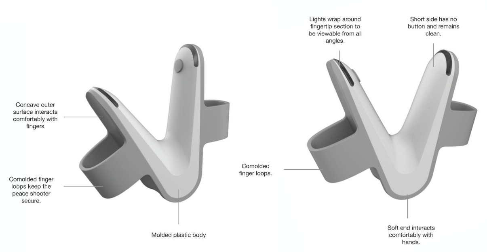
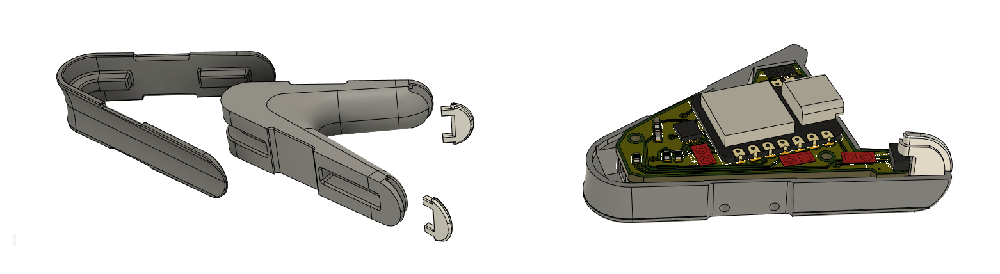
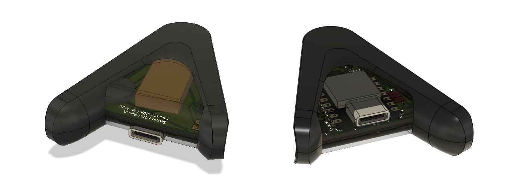
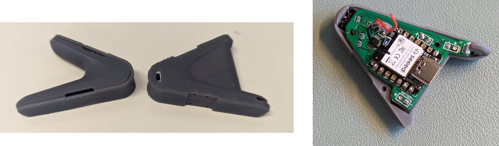
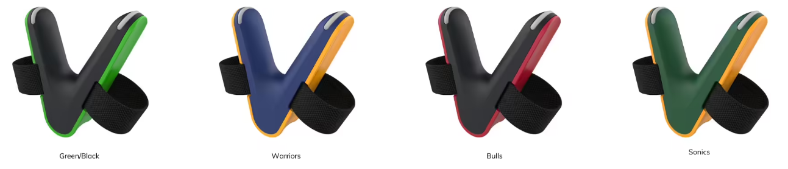

This product, codenamed Swish, is a wearable device that helps basketball players improve their shooting form with technology. This was done by incorporating an accelerometer with some proprietary data processing to provide feedback to the user. Feedback would be provided through LEDs and haptic feedback directly on the device, and through an app as well, tracking progress and providing pointers to the user.

I was contracted within this project as the lead engineer, responsible for the technical execution of the product across different disciplines. I was the primary contributor within Swish, though I worked with a team of 4 at Facture Product Development consisting of a project manager, electrical engineer, mechanical engineer, and an intern. The level of development here was for an initial functional prototype for the client to show to investors and gather more funding, rather than a production version to go to into mass manufacturing and consumers. The video below shows a very early prototype of the product - our version aimed to give the device a design overhaul, upgrade the hardware, and make the features more consistent.
The form factor of Swish was dictated by an existing product on the market that slides onto the pointer and middle fingers of the shooting hands, splaying the two fingers apart. Having width between these two fingers allows the basketball to roll out of the hand on only two surfaces, making shots more accurate and consistent. This meant we had to constrain our device to the small space between two fingers on a hand.
After determining our major size constraint, we began speccing components, starting with the microcontroller. We wanted something fast enough to quickly process accelerometer data and small enough to fit in the small space constraint. We ended up landing on the Seeed Studio XIAO nRF52840 (Sense) https://wiki.seeedstudio.com/XIAO_BLE/ microcontroller, which not only checked the boxes for size and processing power, but also included an on-board accelerometer and had built in BLE for app connectivity.
After the microcontroller was established, we quickly selected a vibe motor, motor driver, and LEDs as well. Next up was the battery. Knowing we had a target 2 hour device battery life, we were able to use the current draw of the components to calculate the capacity of the battery that we needed as well.
Before jumping into more production design, I wanted an initial validation of components. This led me to create the first prototype, with a crude but functional body. I quickly designed a mounting bracket and soldered the components together, allowing me to test the individual features before integrating combining everything in firmware. During this initial testing, I verified that the prototype could gather accelerometer data, trigger various haptic effects, charge and discharge the LiPo battery, and communicate with a phone over BLE.


There are two versions of the enclosures that were designed. One version is the functional prototype that houses the current hardware we used during prototyping. Though slightly bulkier in the area between the fingeres, it functions as intended in the final product. The second veersion is the aesthetic prototype, aiming to highlight what a production version of the wearable would look like. It would have a even more custom-tailored board, allowing us to drastically reduce the footprint of the internals, giving a more polished look to the device's form factor. Below are a few images from the enclosure's development.




The firmware for the device here runs of a proprietary algorithm I developed for the client. It was written in C++ and used accelerometer readings and a state machine to function properly.
One of the new skills I picked up through this project was iPhone app development and BLE integration using xCode. The app for this version of Swish connects the phone to the wearable, collects shot data, and changes the mode characteristics of the wearable.
Note that the video below is an early implementation of the firmware on the wearable.